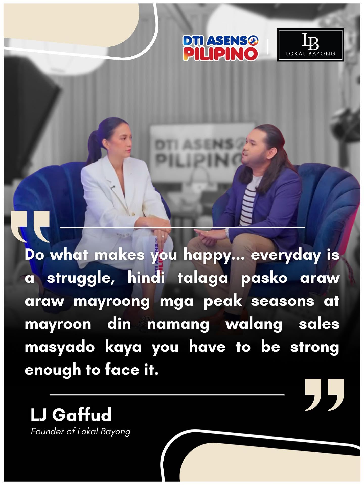

The Beginning
A bag for a cause.
What began as a simple idea — to turn an everyday Filipino staple into something extraordinary — grew into a brand carried on runways, in boutiques, and across the country.
Each bag is woven entirely by hand from durable, upcycled materials. The result is a piece that is elegant, hard-wearing, and unmistakably ours: proudly Filipino, proudly handmade.
"Do what makes you happy. Every day is a struggle, but you have to be strong enough to face it."